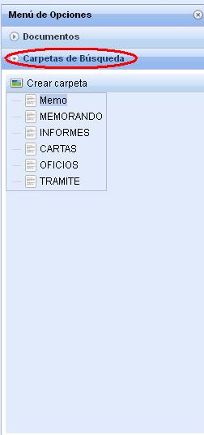
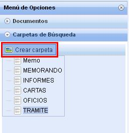

Carpeta de Búsqueda:
Encontramos las siguientes pantallas:

Esta opción es usada para almacenar las búsquedas, ordenándolas en carpetas. Para crear una nueva carpeta de búsqueda debe de desplegar la opción Carpetas de búsqueda del menú y seleccionar Crear Carpeta, se le mostrará la siguiente pantalla:

Al seleccionar Crear Carpeta, se muestra la siguiente pantalla: En donde se puede crear la carpeta con cualquiera de los campos que visualizamos, sin embargo debemos tener en cuenta en el Nombre de la Carpeta, debido a que es un campo obligatorio.
Created with the Personal Edition of HelpNDoc: Easy to use tool to create HTML Help files and Help web sites